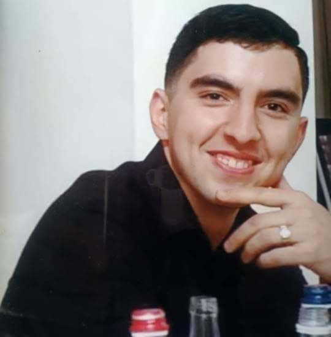
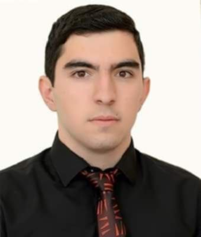
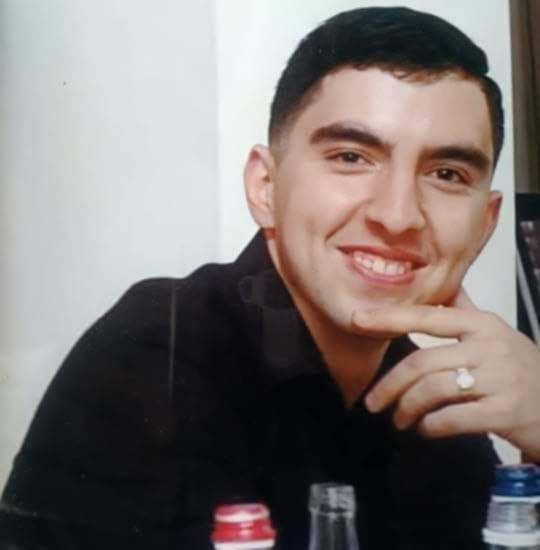
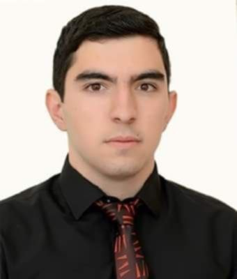

Ռազմիկ Կարենի Թանդիլյանը ծնվել է Լոռու մարզի Հաղպատ գյուղում 06.07.2001 թվականին։ 2007-2019թթ. սովորել է Հաղպատի միջն. դպրոցում։ Սիրում էր հայոց պատմություն և ռուսաց լեզու առարկաները։ Ուսուցիչների սիրելին էր, դասընկերների ուրախությունը, քանի որ շատ կատակասեր էր, ընկերասեր ու գաղտնապահ։
2019թ. ավարտելով դպրոցը, ընդունվել է Հայաստանի Ազգային Պոլիտեխնիկական համալսարան։ Ընդամենը չորս ամիս համալսարանում սովորելուց հետո, 2020 թ. հունվարի 15-ին զորակոչվել է բանակ։ Ծառայում էր Հադրութում, գնդացրորդ էր։ Երբեք չէր դժգոհում։ Մոր հարցերին միշտ պատասխանել է. «Էստեղ սաղ մենք ենք»։
Ինը ամիս էր, որ ծառայության մեջ էր, երբ սկսվեց 44-օրյա պատերազմը։ Սեպտեմբերի 27-ի առավոտյան տագնապով բարձրացրել են դիրքեր։ Հոկտեմբերի 4-ին տեղափոխել են սպայական դիտակետ։ Մարտական ընկերների պատմելով կռվել է իսկական հերոսին վայել խիզախությամբ։ Անընդմեջ կրակելու հետևանքով գնդացիրը շարքից դուրս է եկել։ Նոր գնդացիր է պահանջել։
Հոկտեմբերի 7-ին մոր հետ վերջին անգամ խոսելիս հանգստացրել է՝ «Վախենալու բան չկա, մեր մոտ հանգիստ է»... Իսկ հորն ասել է՝ «Կասեք գյուղից մարդ չգա, ես բոլորի փոխարեն կկռվեմ»... Եղբոր հարցին էլ թե՝ «թուրք տեսած կա՞», պատասխանել է՝ «Ինչքան սիրտդ ուզի»։
Եղբայրը հարցրել է՝ «Կանգնա՞ծ, թե՞ պառկած», Ռազմիկը ծիծաղելով պատասխանել է՝ «Կանգնած են, պառկացնում եմ»...
Ռազմիկը զոհվել է հոկտեմբերի 9-ին սպայական դիտակետի անվտանգությունն ապահովելու ժամանակ հրետանու հարվածից։ Ռազմիկի հարազատ դպրոցի բակում կառուցվել է նրա անունը հավերժացնող ցայտաղբյուր, իսկ գյուղ տանող ճամփեզրին հուշաղբյուր։ Հաղպատ գյուղում Ռազմիկի և բոլոր զոհված քաջ հայորդիների հիշատակը անմահացնող խաչքար է կանգնեցվել։
Մարտական ընկերներից մեկը նրա մասին խոսելիս միշտ նշում է՝ «Սիրտն ուտելու տղա էր»... Հայրը հաճախ է հիշում որդու հետ ունեցած խոսակցություններից մեկը, երբ ասել է, որ ուզում է ձև գտնել, որ որդին չգնա ծառայության, ինչին Ռազմիկը պատասխանել է՝ «Ես որ չգնամ ծառայելու, բա ո՞վ է գնալու»...
Ռազմիկը հետմահու պարգևատրվել է Արցախի նախագահի կողմից «Մարտական ծառայություն» մեդալով, ՀԱՊՀ ուսանողական խորհրդի կողմից «Երախտագիտություն» մեդալով, Առաջին գունդ հասարակական կազմակերպության կողմից «Հովհաննես Թումանյան» և «Մարտական խաչ» շքանշաններով։
Դպրոցական տարիներին Ռազմիկը ստեղծագործել է։ Ունի երկու տասնյակից ավել բանաստեղծություններ։ Հարազատ համալսարանի հովանավորությամբ լույս է տեսել Ռազմիկի բանաստեղծությունների «Պոետիկ տողեր սրտի խորքից» վերնագրով գիրքը։